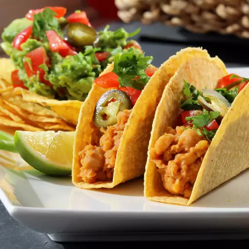

Chickpea Tacos

Description
Quick healthy tacos that the kids will go crazy for. Use this mixture as you would taco meat in taco shells or tortillas.
Add desired toppings and enjoy!
Ingredients
- 2 (15 ounce) cans chickpeas, drained and rinsed
- 3/4 cup water
- 1 (1 ounce) package taco seasoning mix (such as Taco Bell)
- 8 taco shells
Steps
- Place chickpeas in a saucepan over medium heat. Add water and taco seasoning. Cook and stir until thoroughly heated, 5 to 7 minutes. Remove from heat. Mash mixture to crush chickpeas.
- Divide chickpea filling evenly among taco shells.